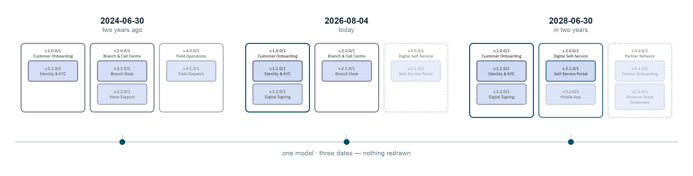

Transitrix DSM — the strategy layer
Dynamic strategy management that operates on the Transitrix model — a strategy that updates as the enterprise model changes, instead of a document that goes stale the week it's approved.
One model, re-projected over time

Where this sits
DSM reads the same text-native model that the methodology defines and Transitrix Studio renders — it does not hold a separate copy of the strategy. Where Studio renders that model as diagrams for review, DSM tracks how a specific view of it — a capability map, a goal tree — shifts as the model itself changes, so strategy stays legible alongside structure instead of drifting from it between reviews.
Status
Transitrix DSM is not open today: no build to install, no repository to clone, and no date set for that to change. The way to see it working is a conversation — reach out at hello@transitrix.com.